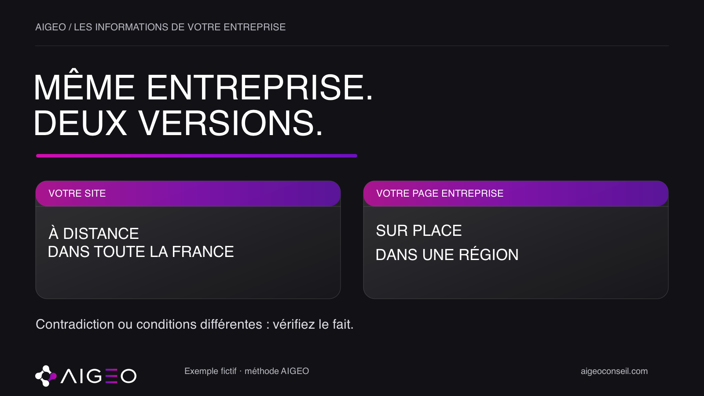
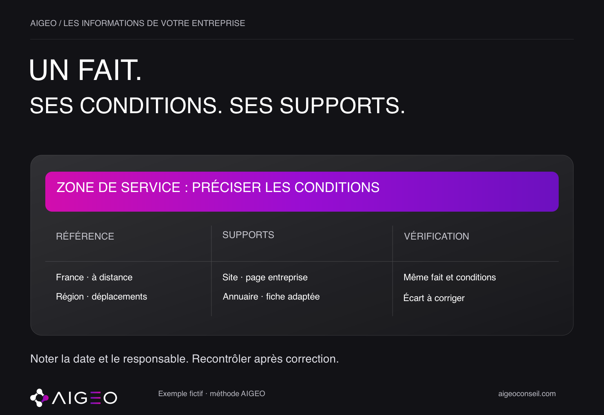

Votre site annonce un accompagnement partout en France. Votre page entreprise ne parle que d’une région. Une ancienne fiche affiche encore votre précédente adresse.
Avant d’ajouter un nouveau contenu, une question mérite d’être réglée : ces supports décrivent-ils les mêmes faits, avec les mêmes conditions ? La cohérence ne consiste pas à copier une phrase partout. Elle consiste à donner une description juste de votre entreprise.
Choisir les faits qui comptent
Commencez par quelques informations simples : votre nom, votre activité, les clients auxquels vous vous adressez, votre zone de service, vos coordonnées et vos principales offres.
Pour chaque fait, notez la version actuelle et la personne qui peut la confirmer. Une adresse se vérifie auprès de l’équipe concernée. Une condition d’intervention se vérifie auprès de la personne qui organise le service. Le rédacteur ne devrait pas choisir au hasard entre deux descriptions contradictoires.
Cette référence interne sert à comparer vos supports. Elle ne remplace pas la vérification de ce qui est effectivement affiché sur chacun d’eux.
Distinguer une contradiction d’une précision
Prenons une entreprise fictive. Elle accompagne ses clients à distance dans toute la France, mais ne se déplace que dans une région. « À distance dans toute la France » et « Sur place dans cette région » peuvent être parfaitement compatibles.
Le problème apparaît si les conditions disparaissent. Un lecteur qui voit seulement « Couverture nationale » peut comprendre autre chose que le service réellement proposé. Une autre page qui ne mentionne que la région peut, au contraire, donner une description incomplète.
Avant de corriger, posez donc les deux versions côte à côte. Décrivent-elles des services différents, des conditions différentes ou un véritable désaccord sur le même fait ? L’exemple est fictif ; aucune entreprise ni réponse d’assistant n’a été auditée pour cet article.
Comparer les supports utiles

Examinez d’abord votre page À propos et vos pages de services. Comparez-les avec votre page entreprise, les annuaires importants pour votre activité et votre fiche d’établissement, si vous en possédez une adaptée à votre situation.
Ne cherchez pas toutes les anciennes mentions en une seule séance. Choisissez les supports que vos clients consultent et ceux dont vous pouvez faire corriger les informations. Conservez l’adresse de chaque page et la date à laquelle vous l’avez lue.
Google explique comment modifier les informations d’une fiche d’établissement validée, par exemple l’adresse, les horaires et les coordonnées. Sa documentation précise que les modifications sont examinées avant leur application. Une correction demandée ne doit donc pas être présentée comme déjà visible. Cette documentation ne promet pas qu’un assistant citera ensuite votre entreprise.
Transformer l’écart en action précise
La méthode AIGEO proposée ici consiste à relever, pour chaque écart, le fait examiné, sa référence actuelle, le support concerné, la différence constatée et le responsable de la correction. Ajoutez la date du contrôle.
Une action utile ressemble à ceci : « La page présente encore l’ancienne adresse ; la remplacer par l’adresse actuelle confirmée par l’équipe. » Elle est plus claire qu’un objectif général comme « améliorer notre présence en ligne ».
Si le support est géré par un tiers, gardez la trace de votre demande. Si vous gérez la page, préparez une correction qui conserve les conditions utiles au client. Vérifiez ensuite le contenu effectivement affiché. L’envoi d’un message, une modification dans un outil et sa visibilité publique correspondent à des étapes différentes.
Garder une trace et les bonnes limites
Après correction, relisez la page concernée et notez la date du nouveau contrôle. Une nouvelle offre, un déménagement ou une évolution de la zone d’intervention peuvent justifier une autre vérification.
Cette démarche améliore la précision de vos informations ; elle ne garantit ni citation ni recommandation par une IA. Pour évaluer ce qu’un assistant dit réellement de votre marque, il faudrait examiner une réponse observable, son contexte et ses sources. Aucun résultat de ce type n’est affirmé ici.
Pour commencer, choisissez un fait important et comparez sa présentation sur votre site et votre page entreprise. Chez AIGEO, nous partons de ces écarts concrets pour définir les corrections utiles. Découvrez notre démarche sur aigeoconseil.com.
Sources consultées
- Google — Modifier votre fiche d’établissement · vérifiée le 2026-10-07T22:41:45.079Z